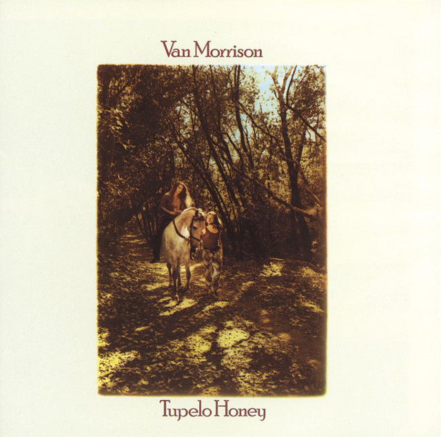

Day 133

Van Morrison ◆ Tupelo Honey ◆ Tupelo Honey ◆ 1971
Van Morrison 其实已经提到过了，但是实在喜欢这首歌，所以再发一篇。想起来写这首歌是因为今天早上在上班路上，车里听到了。歌里讲的是像 tupelo honey 一样甜的爱人。Van Morrison 的演唱温柔、甜蜜、幸福，引吭高歌与低声细语交织，轻轻的颤音让人神魂颠倒www
在车里听到这首歌，感觉自己的心情也被幸福灌满，走出车门，披着蒙蒙细雨，往工作的大楼走过去的时候还能感到一种被充盈的愉悦。
这首歌适合戴耳机听。
You can take all the tea in China
Put it in a big brown bag for me
Sail right around the seven oceans
Drop it straight into the deep blue sea
She’s as sweet as tupelo honey
She’s an angel of the first degree
She’s as sweet as tupelo honey
Just like honey from the bee
You can’t stop us on the road to freedom
You can’t keep us ’cause our eyes can see
Men with insight, men in granite
Knights in armor bent on chivalry
She’s as sweet as tupelo honey
She’s an angel of the first degree
She’s as sweet as tupelo honey
Just like honey from the bee
You can’t stop us on the road to freedom
You can’t stop us ’cause our eyes can see
Men with insight, men in granite
Knights in armor intent on chivalry
She’s as sweet as tupelo honey
She’s an angel of the first degree
She’s as sweet as tupelo honey
Just like honey from the bee
You know she’s alright
You know she’s alright with me
She’s alright, she’s alright (she’s an angel)
You can take all the tea in China
Put it in a big brown bag for me
Sail it right around the seven oceans
Drop it smack dab in the middle of the deep blue sea
Because she’s as sweet as tupelo honey
She’s an angel of the first degree
She’s as sweet as tupelo honey
Just like honey from the bee
She’s as sweet as tupelo honey
She’s an angel of the first degree
She’s as sweet as tupelo honey
Just like the honey, baby, from the bee
She’s my baby, you know she’s alright.....
Source: AZLyrics